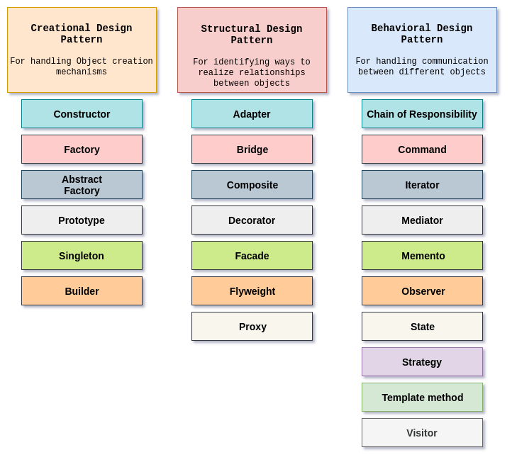

Design Patterns are basically a way of making code very neat and fixing them with the appropriate purpose. Sometimes it’s not the way you like it but it can be very helpful. The way I see it, it can be very useful in someways. It will only be able to fix with a certain type of problem instead of dealing with all types of problems. It can be very neat by having it organized by making your code look very attractive in a way. Although, Design Patterns can have better alternative from fixing your problems, it can be a bit frustrating.
Design patterns can be very useful which I’ve used in my own code which was with my final project for example. A lot of times ESLint will help me out but there would be a lot of bugs in different files. At first when I first started working on the final project it was hard to get through different approaches which I tried to put a card with some type of text and it took me awhile to make sure it was set because there was a lot of bugs that I’ve tried to fix in my code but eventually later on with my final project, it was much easier to fix certain bugs and able to get through each process smoothly. It can be frustrating at first but it becomes very useful later on in the process. Sometimes I would refactor my code but I’ve stopped using it because I would always depend on it a lot and sometimes refactoring can be a pain because it can cause a lot of problems but it can also help you in the end.
In conclusion, using Design Patterns is a great way to help fix bugs in your problems and make everything neat. It reminds me of a love and hate situation with design patterns and it can be frustrating but in the end it’s all worth it. I personally believe that it’s a must use and most definitely shouldn’t be ignored. Next time, when using design patterns I need to relax and see where my code is headed and make sure that it’s a lot cleaner.